目录
基础加密
基础解密
2x2解密的捷径
加密更长的文本
空字符
空杠
下杠
句子加密格式
附件
基础加密
首先，我们可以现在纸上（或者别的什么地方）画一个2x2的网格出来。如下图：
然后，我们根据字母表顺序，将要加密的内容变为数字。
例如我们要加密ABCD，A在字母表中的顺序是1，B在字母表中的顺序是2，C在字母表中的顺序是3，D在字母表中的顺序是4，
于是可以得出数字 1 2 3 4 ，再将这些数字从左往右填入格子中。
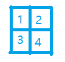然后，我们把一整个大格子想象成划了两条线，从左上到右下一条线，从右上到左下也是一条线。
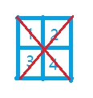接着，把这两条线上面的数字加起来，写到外面去。
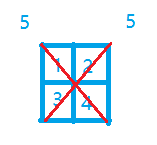把这两条想象的线去掉，再想象四条新的线，分别是两条横的，两条竖的，再按照之前的方式把数字加起来。
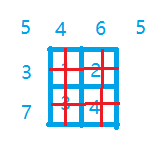然后，我们把左边包括左上角的三个数字写下来，就是 5 3 7 ，再把剩下的数字也写下来，放在之前的数字的后面。
于是我们得到了一串新的数字: 5 3 7 4 6 5 ，再把这些数字按照字母表顺序变回字母，
最后我们得到了 ECGDFE。
所以，ABCD经过XT-LC加密后，得到的结果为ECGDFE。
当你明白加密到底是怎么一回事后，也可以不用画线，直接计算数字。
你肯定想问了: 如果我想加密更长的文本，怎么办呢? 这会在以后进行学习。如果你想先学习加密更长的文本，也可以点击 这里 。
基础解密
我们刚刚学习了把ABCD加密为ECGDFE，那么如何把ECGDFE变回ABCD呢?
你也许会说: 把它们反过来进行一次运算，不就好了吗?
确实是这样，但是实际的解密并没有这么简单。
首先，当然要先画一个2x2的网格。
我们把ECGDFE变成数字 5 3 7 4 6 5 ，然后按照之前学习加密的方法，把数字写到同样的位置。
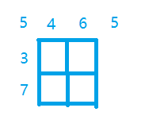接下来，如果我们把四个框中的数字想象成一个未知数的话，那么你就可以尝试解决一下这个方程。
x+a=5
x+y=3
z+a=7
x+z=4
y+a=6
y+z=5
这样看上去感觉把问题复杂化了，实际上我们可以一个一个假设数字，如果能够得到 5 3 7 4 6 5的条件的话，那么就对了。
例如，我们假设第一个框的数是1（实际也是1），那么我们可以通过3-1=2和4-1=3得出第二、三个框的数字，再使用7-3=4或6-2=4即可得出第四个框的数字。
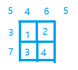那么，如果我们假设第一个数字是2呢?
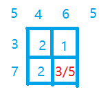我们看到，在第四个框中，从不同的方向计算有不同的答案。如果出现这种现象的话，那么你就错了。
所以，第一个框不是2（B）。
当然，如果加密字符的长度变得更长，或者字母在很靠后的话（如Z，26），就不像这么简单了。
2x2解密的捷径
对于2x2的解密，我们实际上有一个更简单的方法。
我们看到之前的那串数字 5 3 7 4 6 5，取第一、二、五个数字，也就是 5 3 6，把这三个数字代入下列公式:
(一+二-三)/2
通过这个公式得出来的数字就是第一个方框的数字。我们来试试:
(5+3-6)/2
=2/2
=1
也就是说第一个方框的数字是1，而根据我们之前的文章来看的话，这个结果是对的。
你可以自己试试看看，并想想为什么能够这样做。
注意：这个方式仅限2x2加密。
加密更长的文本
我们已经知道了2x2的加密和解密，但是如果我们要加密更长的文本（如ABCDEFGHI），那么应该怎么办呢?
我们只需要看看哪个大小的框能够装完全部的字母即可，但也不要太大，例如ABCDEFGHI有9位，我们可以选用3x3的网格。
但是注意：两条边的长度一定要相等（即正方形）。
然后，我们就可以把数字填入3x3的网格了，然后加密和解密都差不多是一个意思。
空字符
你有没有发现，我们拿来讲的要加密的字母，都是整数的平方个? 例如4是2的平方，9是3的平方，这些字符能正好把每一个格子都填满。
但是，如果我们有一串要加密的字母，它不能正好填满每个格子?
这种事情的解决方法其实很简单，只需要用0代替即可，这个0我们称之为空字符。如下图:
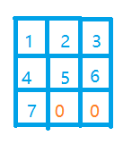空杠
我们已经了解过了空字符，但是我们注意到上面那个图即使有两个空字符，它们所在的那一行也有一个正整数7，因此计算的结果是7+0+0=7。
但是，如果一整行/列/对角线都是空字符，我们应该怎么办呢?
其实我们可以把它当成0+0+0=0，因此可以写个0上去，但是我们还有另一个方法，就是写一个横杠（-）在得数的位置。如下图：
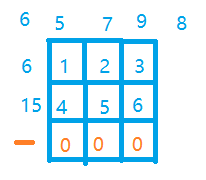这样子，我们加密出来的密码可以写成这样：FFO-EGIH，也是用一个横杠代替字母。
下杠
相信你已经发现了，我们在这篇文章中的每一个加密后的得数都不会大于26（Z）。但是，如果我们真的得出一个大于26的数，应该怎么办呢?
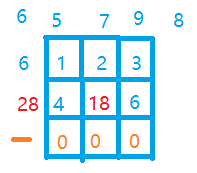我们可以先将这个数减去26。如果得到的结果还是大于26，那么继续减，直到得数小于26。
然后，你想想这个数到底减去了多少个26? 减去了多少个26，就在得数对应的字母下写多少个横线。
例如28-26=2，2对应B，减去了一个26，所以就在B下面划一条线。
不过，如果因为某些限制无法在字母下面划线的话，我们可以把横线写到字母后面，然后用括号把字母和下杠括起来，目的是为了与空杠区分开来。
B与1个下杠: (B-)
B与空杠: B-
以上两个在一起: (B-)B-
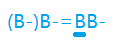句子加密格式
当你想加密一个句子时，应该把每个单词分开来加密，区分单词的空格建议留多一点，然后把标点保持原来的位置即可。